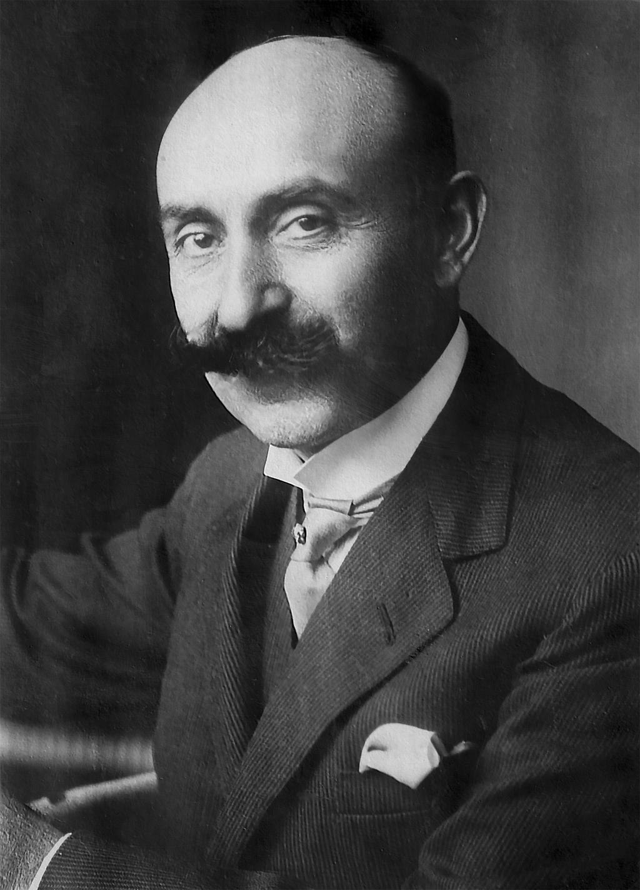
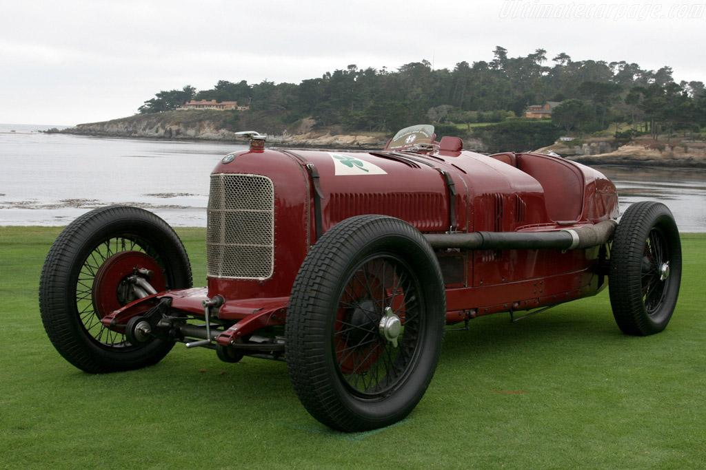
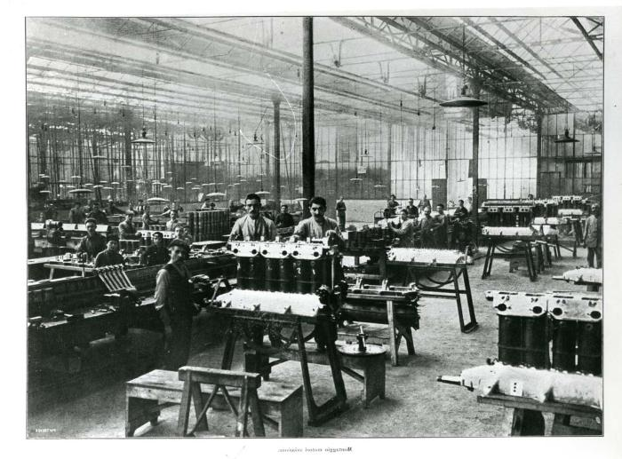
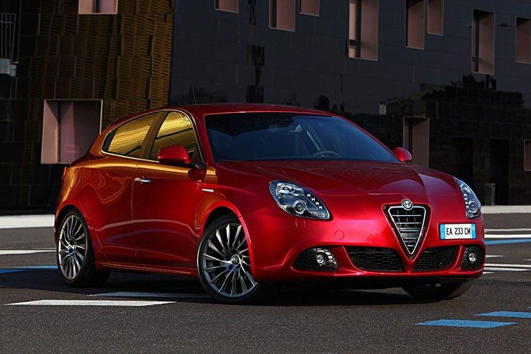
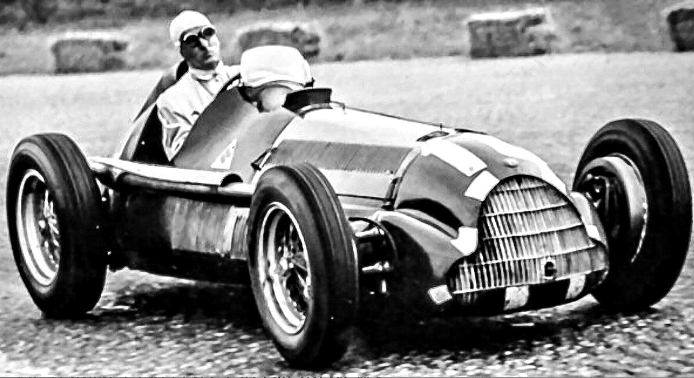
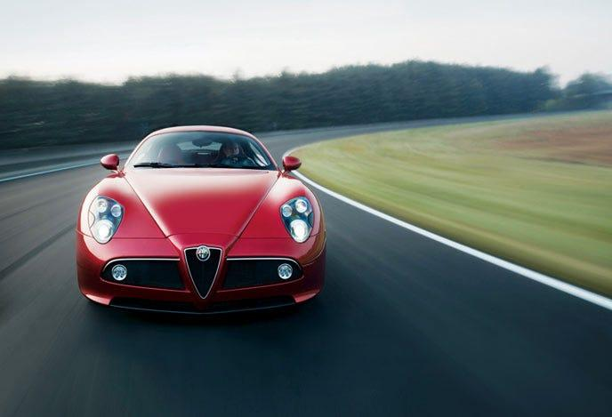
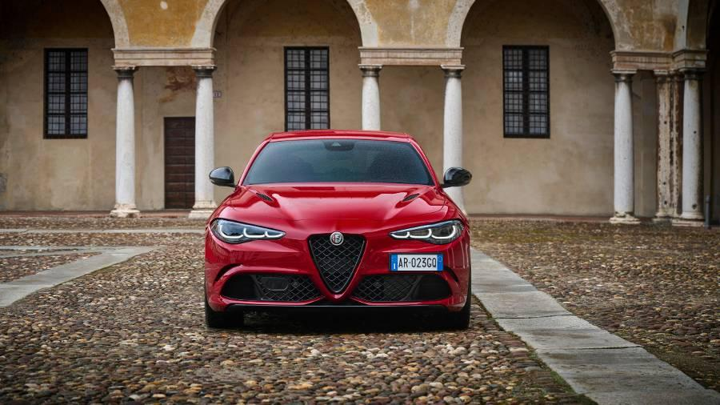
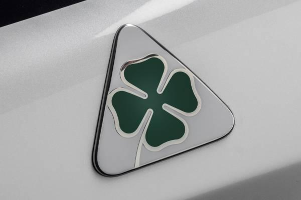
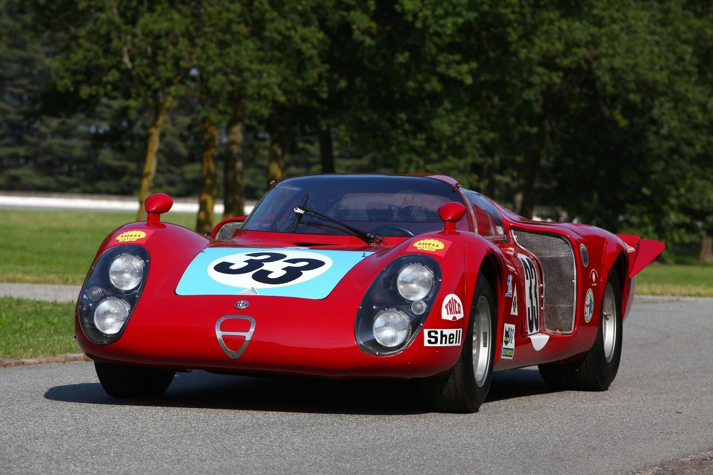
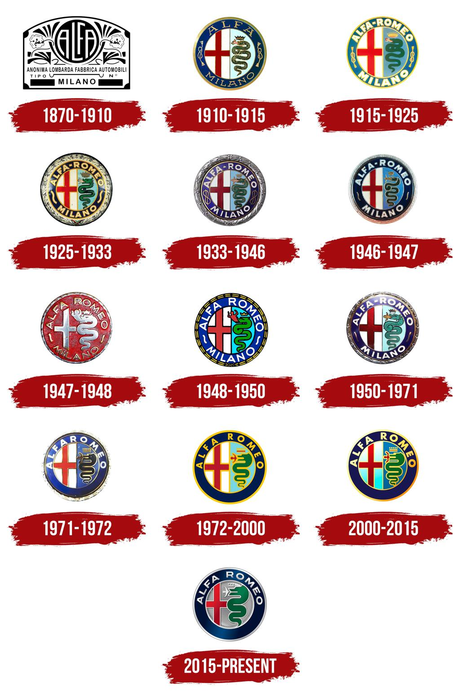

L'histoire d'Alfa Romeo commence en 1910 à Milan avec la création de l'entreprise A.L.F.A., qui signifie Anonima Lombarda Fabbrica Automobili. La première voiture produite est l'ALFA 24 HP, une automobile puissante et élégante qui se distingue rapidement par ses performances. En 1915, l'ingénieur et entrepreneur Nicola Romeo prend le contrôle de l'entreprise. Son nom est ajouté à celui d'ALFA : la marque devient officiellement Alfa Romeo.

Dès les années 1920, Alfa Romeo devient célèbre grâce à ses voitures de course. En 1925, la P2 remporte le premier Championnat du monde des constructeurs. Les modèles 8C dominent ensuite de nombreuses courses prestigieuses. Parmi les pilotes les plus célèbres figure Tazio Nuvolari, considéré comme l'un des plus grands pilotes de tous les temps. Cette période forge la réputation sportive de la marque.

Pendant la Seconde Guerre mondiale, Alfa Romeo fabrique principalement des moteurs d'avion, des moteurs industriels et du matériel militaire. Les usines sont fortement bombardées durant le conflit. Après la guerre, la marque doit reconstruire ses installations et relancer la production automobile.

Après la guerre, Alfa Romeo connaît une nouvelle période de succès. Parmi les modèles les plus célèbres :
Ces voitures séduisent les amateurs de conduite sportive dans le monde entier.

Alfa Romeo entre dans l'histoire de la Formule 1 dès la création du championnat. En 1950, Giuseppe Farina remporte le tout premier Championnat du monde de Formule 1 au volant d'une Alfa Romeo. En 1951, Juan Manuel Fangio décroche un deuxième titre mondial avec la marque. Ces succès font d'Alfa Romeo l'un des premiers grands constructeurs de la Formule 1.

En 1986, Alfa Romeo est rachetée par Fiat. La marque lance plusieurs modèles très appréciés :

Aujourd'hui, Alfa Romeo fait partie du groupe Stellantis. Parmi les modèles récents :
La marque prépare également une nouvelle génération de véhicules électriques tout en conservant son caractère sportif.

Le célèbre Quadrifoglio (trèfle à quatre feuilles) apparaît en 1923. Il est utilisé pour la première fois par le pilote Ugo Sivocci comme porte-bonheur. Après sa victoire, le trèfle devient le symbole officiel des Alfa Romeo les plus performantes. Aujourd'hui encore, les modèles Quadrifoglio représentent les versions les plus sportives de la marque.

Depuis plus d'un siècle, Alfa Romeo participe à de nombreuses compétitions. La marque a remporté :
Le sport automobile fait partie de l'ADN d'Alfa Romeo.

